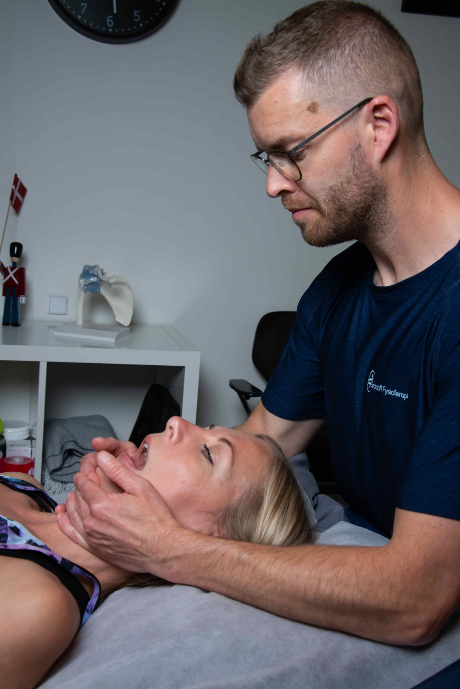
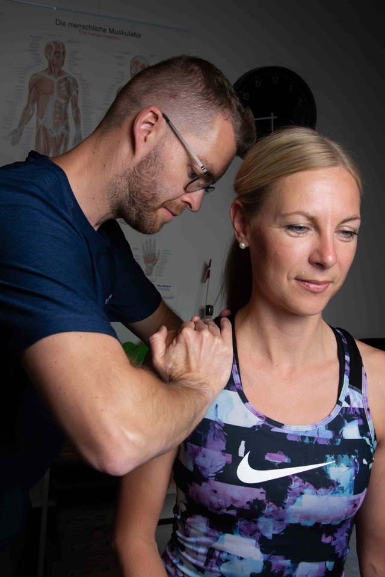
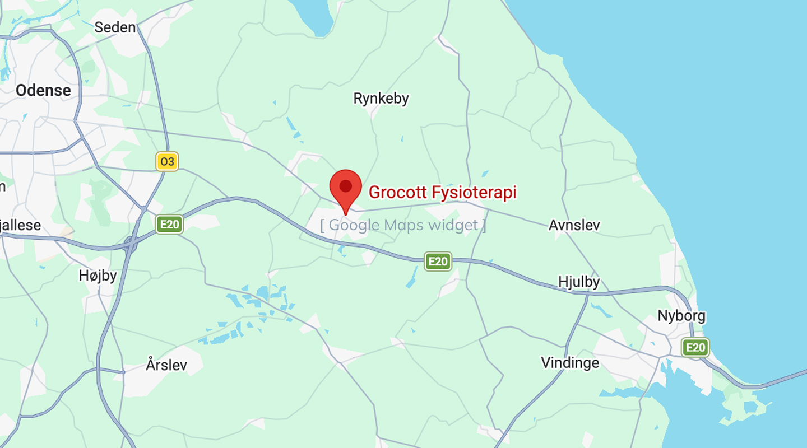

BEHANDLING
Kæbeleds-spændinger og hovedpine? Det starter ofte i nakken.
Knæk i kæben, spændingshovedpine eller migræne-lignende anfald? Vi behandler den underliggende mekaniske årsag.
Book tidHvad er kæbe- og hovedpineproblemer?
Kæbeleds-dysfunktion og spændingshovedpine hænger ofte tæt sammen. Typiske symptomer:
- Klikken eller låsning i kæbeled
- Smerter ved tygning
- Spændingshovedpine
- Bruxisme (tænderskæren)
- Migræne-lignende anfald
- Øresmerter uden infektion

Fra første besøg til færre kæbe- og hovedpinesymptomer
- 1
Undersøgelse og diagnose
Funktionel test og bevægelsesanalyse.
- 2
Målrettet behandling
Manuelle teknikker, dry needling, gradueret belastning.
- 3
Øvelser og selvhjælp
Hjemmeprogram du faktisk kan følge.
Rigtige klienter. Rigtige resultater.
"Nicolai forstod mit problem på 5 minutter. Efter 3 behandlinger var smerterne væk."
"Endelig en fysioterapeut der ikke bare giver mig en standardøvelse."
"Den bedste fysioterapeut jeg har været hos i 20 år."
Min tilgang til behandling af kæbe og hoved
Kæbe- og hovedpineproblemer har ofte en mekanisk årsag i nakke og kæbeled. Vi kortlægger den præcise årsag og behandler der — ikke blot symptomet.
Book tid
Hvad koster behandling af kæbe og hoved?
Sygesikring Danmark og mange erhvervsforsikringer dækker typisk 30-40% af behandlingen.
Spørgsmål om kæbe- og hovedpinebehandling
Kan en fysioterapeut behandle kæbeledsproblemer?
Ja — kæbeledsproblemer (TMD) er et speciale inden for fysioterapi. Manuel behandling af kæbeled og nakke kan reducere smerte, klik og låsning markant.
Er min hovedpine relateret til kæben?
Det er muligt. Spændinger i kæbemusklerne og nakken er en hyppig årsag til spændingshovedpine. En grundig undersøgelse kan afklare sammenhængen.
Hjælper behandlingen mod tænderskæren (bruxisme)?
Fysioterapi kan reducere muskelspændingerne der driver bruxismen. Det erstatter ikke en skinnne fra tandlægen, men de to behandlinger supplerer hinanden godt.
Hvor mange behandlinger skal jeg forvente?
Typisk 4-6 behandlinger afhængigt af problemets kompleksitet. Vi lægger en klar plan efter første besøg.
Hvilke andre smerter behandler vi?
Usikker? Bare ring.
Jeg svarer ofte selv på telefonen — også uden for åbningstid. Ring og spørg hvad som helst.
+45 60 86 67 70
Find vej til klinikken
Langeskov Centret 1, butik 35550 Langeskov Få rutevejledning →
Åbningstider
- Man–Fre08:00–18:00
- Lørdag09:00–13:00
- SøndagLukket